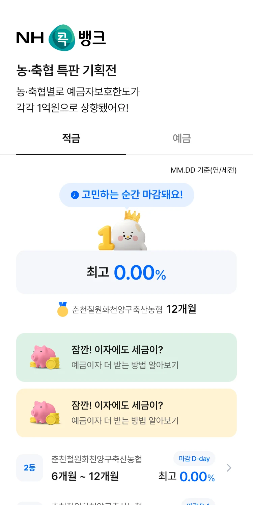
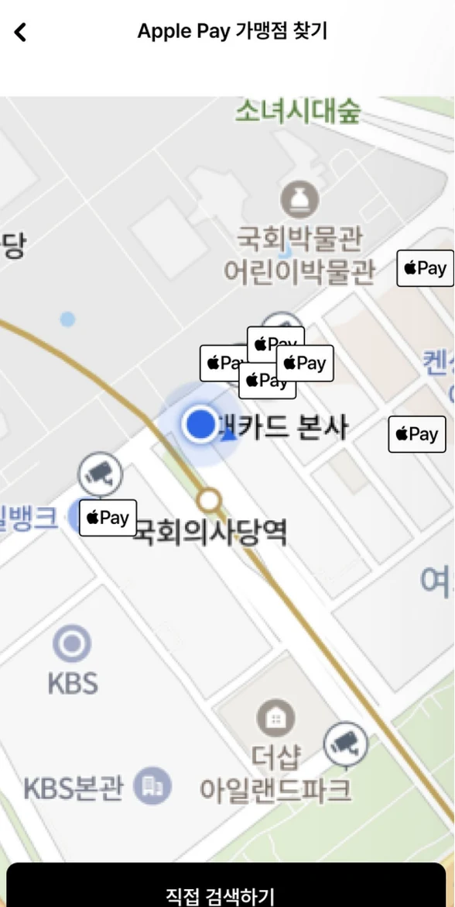
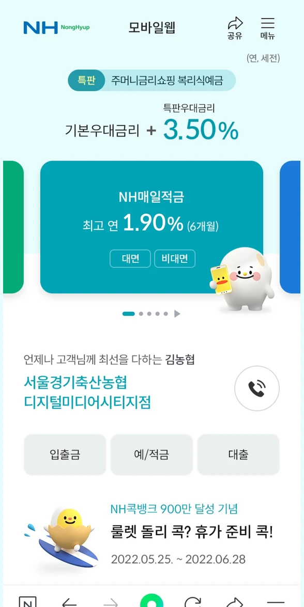

농협중앙회장상
상호금융 수신 신상품 아이디어
이다솔 · UX 디자인 포트폴리오
사용자의 작은 불편을 살피고,
더 나은 방법을 고민하는 일을 좋아합니다.



대표 프로젝트
농·축협 금융상품몰 UI/UX 기획 및 운영
Apple Pay · 학사 안내 정보 설계
개인 프로젝트
Codex로 구현하고,
릴스와 연결한 개인 모바일웹
소개
이화여자대학교 디자인대학원 · UX 전공 석사 재학
2025.03–현재
상호금융콕뱅크사업부 · 주임
토스 연계 상품 탐색 · 금융상품몰 · 이벤트Payment사업실 · Associate
Apple Pay 매장 탐색 서비스 기획안상호금융디지털사업부 · 주임
지점별 모바일웹 · 나만의 예·적금 찾기공과대학 · 직원
수강신청 안내 콘텐츠 · 홈페이지 운영수상 · 학업
상호금융 수신 신상품 아이디어
농업협동조합중앙회
UX 전공 · 석사과정
이다솔 · UX 디자인 · 서비스 기획